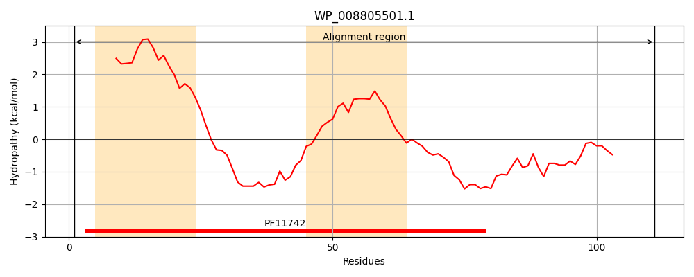
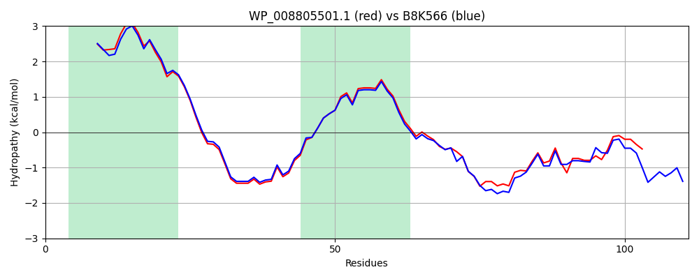

WP_008805501.1
Hit Accession: B8K566
Hit TCID: 9.B.32.1.3
Hit Description: gnl|BL_ORD_ID|2128 gnl|TC-DB|B8K566|9.B.32.1.3 GTPase OS=Vibrio parahaemolyticus 16 GN=VPMS16_3045 PE=4 SV=1
Mach Len: 111
e:0.000000
Query TMS Count : 2
Hit TMS Count: 2
TMS-Overlap Score: 2.000000
Predicted Substrates:None
BLAST Alignment:
| Protein Hydropathy Plots: | |
|---|---|
|  |  |
Pairwise Alignment-Hydropathy Plot: | |
|  | |